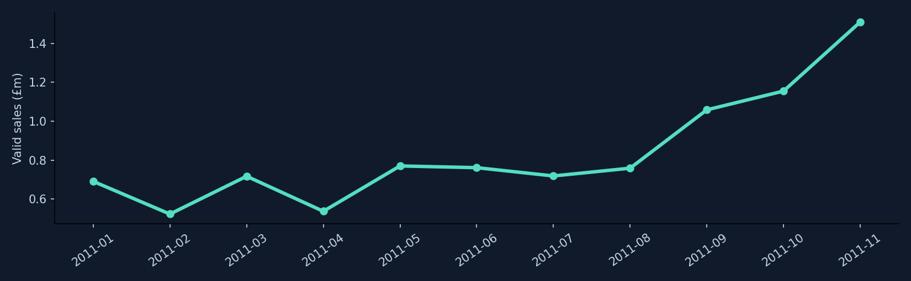
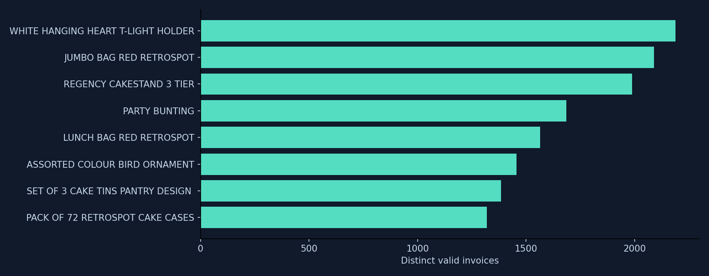

01 / TIMING
Plan around demand
Review full-month sales patterns before allocating campaign or support capacity.
A practical retail decision tool
Analyse your own sales CSV in your browser, test a campaign plan, and explore a real retail case study with separately sourced UK market context.
Your data · local browser analysis
Select a comma-separated CSV with an order date, order ID and positive sales value. Customer ID is optional. Map your column names, then inspect monthly sales, distinct orders, average order value and repeat customers. Download a fictional sample CSV to try it first.
Your file is read inside this browser tab. It is not uploaded, stored or combined with the UCI case study.
Choose a CSV to begin. Dates may be YYYY-MM-DD or UK DD/MM/YYYY. Positive order or line values only.
Rows with missing order IDs, invalid dates or non-positive sales values are excluded and counted. Identical-looking rows are flagged but retained because they may be valid separate line items. Repeat rate counts identified customers with at least two distinct valid order IDs. The tool does not calculate profit or validate refunds. Do not upload a sensitive file to a shared computer.
Interactive tool · use your own assumptions
Estimate orders, incremental sales, contribution after campaign spend and the conversion rate needed to break even. Try the example, then replace every input with your own figures.
Enter valid numbers within the ranges shown.
At these assumptions, estimated contribution covers campaign spend.
| Case | Conversion | Extra sales | Contribution after spend |
|---|
Assumptions are illustrative and may not match actual behaviour. Contribution after spend = expected extra sales × gross margin − campaign spend. It is not net profit: returns, VAT, overhead, fulfillment and other costs are excluded. Break-even conversion assumes each conversion makes one additional order. No personal data or inputs are sent to a server.
The business question
This project turns raw transaction lines into three areas for review. Each recommendation is a decision prompt, not a claim of proven impact.
Review full-month sales patterns before allocating campaign or support capacity.
Use invoice frequency to shortlist products, then validate margins and stock before acting.
Compare first-purchase cohorts and design a measurable repeat-purchase experiment.
Historical retailer · UCI dataset
Latest observation: 2026-08; ONS release: 18 September 2026. Great Britain, seasonally adjusted, all retailing excluding automotive fuel.
Online share by month in 2026 (percent of retail sales):
These ONS figures describe the Great Britain retail market in a different period. They are context, not the revenue, customer retention or growth of the 2010–11 retailer. The percentage bars use a 0–100% scale. The weekly amount is not a monthly total.
Source: ONS Retail Sales Index internet sales, series MS6Y and MZX6. Refresh withpython ons_context.py, then python analyze.py; ONS may revise past observations.Filter actual valid sale lines by country and month. These are recorded positive invoice-line values, including some charges; they are not profit. A sale line is not an order. Country is the transaction's recorded country.
Valid sales by invoice month, January–November 2011. The partial December 2011 month is excluded.

Top products by distinct invoices across the full observed period. Postage and manual charge codes are excluded from this ranking. Frequency avoids treating one unusually large order as broad demand. A restock decision also needs stock, costs and margin data.

Month 1 retention by first observed purchase month. Cohorts through October 2011 have at least one subsequent calendar month available.
| First observed month | Customers | Returned next month | Retention |
|---|---|---|---|
| 2010-12 | 885 | 324 | 36.6% |
| 2011-01 | 417 | 92 | 22.1% |
| 2011-02 | 380 | 71 | 18.7% |
| 2011-03 | 452 | 68 | 15.0% |
| 2011-04 | 300 | 64 | 21.3% |
| 2011-05 | 284 | 54 | 19.0% |
| 2011-06 | 242 | 42 | 17.4% |
| 2011-07 | 188 | 34 | 18.1% |
| 2011-08 | 169 | 35 | 20.7% |
| 2011-09 | 299 | 70 | 23.4% |
| 2011-10 | 358 | 86 | 24.0% |
541,909 source lines; 530,104 valid sales lines; 11,805 excluded lines, including 10,624 cancellation or negative-quantity lines. 132,220 valid sales lines lack customer IDs and are excluded from customer metrics.
The headline is positive invoice-line value and may include charges such as postage; it is not profit. Cancellation lines are not a refund rate. The data ends 9 December 2011 and does not describe today's market.
Source: Chen, D. (2015), Online Retail, UCI Machine Learning Repository, DOI 10.24432/C5BW33, CC BY 4.0. All calculations are reproducible with python analyze.py; see GitHub README, SQL and tests for definitions and review.